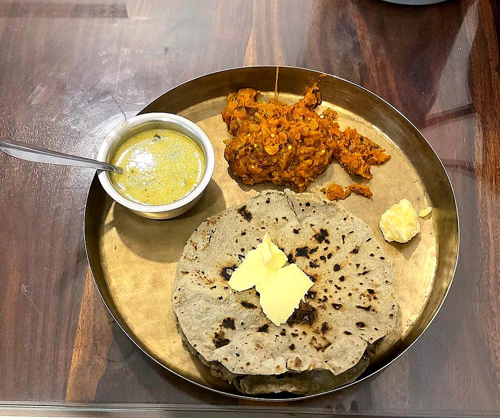

Contains: milk, mustard
Checked against the ingredient list for ten allergens: milk, egg, fish, crustaceans, tree nuts, peanuts, sesame, mustard, soy and gluten. Brands vary, so read the label on anything new to you.
Ingredients
Quantities for 4.
- 500g, sour, well whisked Yogurtday-old yogurt gives the right tang
- 3 tbsp Besansifted, or it will lump
- 750ml Water
- 2 tbsp, grated JaggeryGujarati kadhi is sweeter than most
- 1 tbsp, crushed to a paste Ginger
- 3, slit lengthways Green Chilli
- 2 tbsp Ghee
- 1 tsp Cumin Seeds
- 1/2 tsp Mustard Seeds
- 1/4 tsp Fenugreek Seedsa scant pinch. More turns it bitter
- 3 Clovesoptional
- 2cm piece Cinnamonoptional
- 2, broken Dried Red Chillioptional
- 12 Curry Leaves
- 1/4 tsp Asafoetidause compounded-free hing to keep this gluten-free
- 1/4 tsp Turmeric
- 3 tbsp, chopped Coriander Leavesto finishoptional
- to taste Salt
Cookware
stovetop
Before you start
- Take the yogurt out of the fridge 30 minutes ahead. Fridge-cold yogurt splits the moment it meets heat.
- Whisk the besan into the yogurt first, before any water goes in, and keep whisking until no grains remain.
- Crush the ginger and chilli together in a mortar rather than chopping; kadhi wants their juice, not pieces.
Method
- Whisk the besan into the yogurt until completely smooth, then thin it with the water a little at a time.Lumps at this stage never dissolve later. They cook into rubbery specks.
- Stir in the turmeric, jaggery, ginger, green chilli and salt, and set the pan over medium heat.
- Bring it to a boil stirring constantly in one direction, about 8 minutes. It will foam up as it reaches the boil.Do not walk away or stop stirring before the first boil. That is exactly when it curdles.
- Drop the heat and simmer 10 minutes, until the raw besan smell is gone and the kadhi coats a spoon thinly.
- Heat the ghee in a small pan and add the mustard seeds; wait for them to pop.
- Add the cumin, fenugreek, cloves, cinnamon and dried red chilli, and let them darken for 15 seconds.Fenugreek burns in seconds and turns the whole pot bitter. Pull the pan the moment it colours.
- Add the curry leaves and asafoetida, stand back from the spatter, and pour the tempering straight into the kadhi.
- Simmer 2 minutes more, scatter the coriander over and serve hot with plain rice or khichdi.
Storage
Keeps 2 days refrigerated. Reheat gently over low heat with a splash of water, stirring. A hard boil on reheating will split it.
Nutrition Medium estimate
Low protein: 8 g a serving, 14% of the calories
| Per serving172 g | Per 100 g | |
|---|---|---|
| Calories | 220 kcal | 129 kcal |
| Protein | 7.7 g | 4 g |
| Carbohydrate | 22.3 g | 13 g |
| of which sugars | 14.9 g | 9 g |
| Fibre | 2.0 g | 1 g |
| Fat | 11.7 g | 7 g |
| of which saturated | 6.7 g | 4 g |
| of which unsaturated | 4.2 g | 2 g |
Ingredients given to taste count as zero, so the real figures run a little higher. Nearest database match used for asafoetida, curry leaves, jaggery. Estimated from raw ingredients using USDA FoodData Central.
Times, yields, allergens and nutrition are guidance. Use your own judgement on doneness and on storing. More in About.